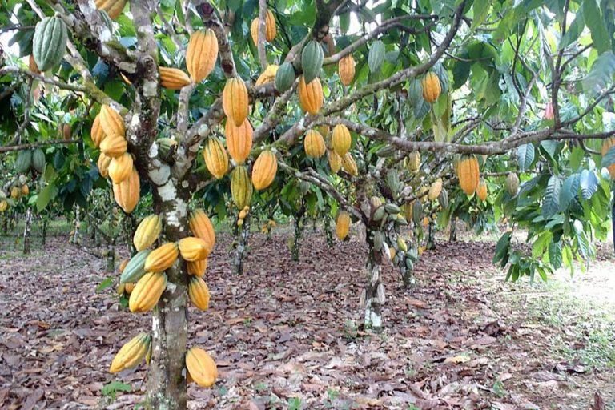
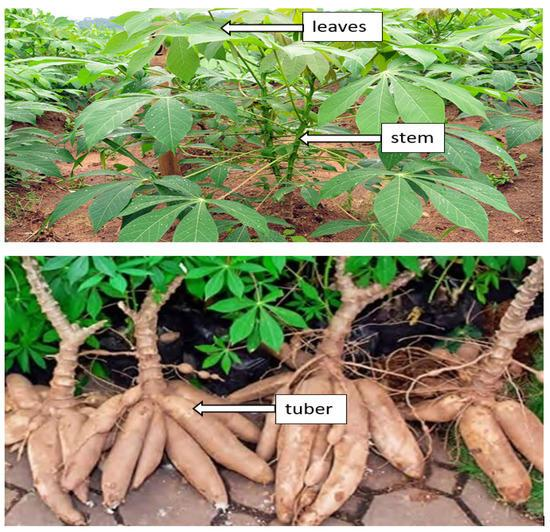
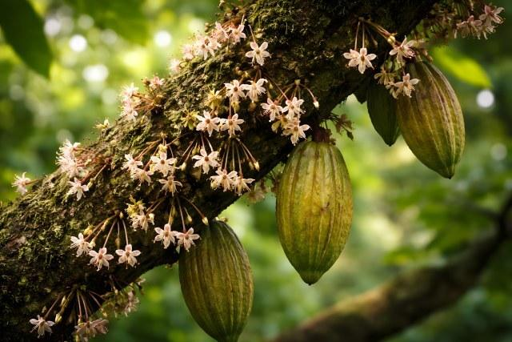
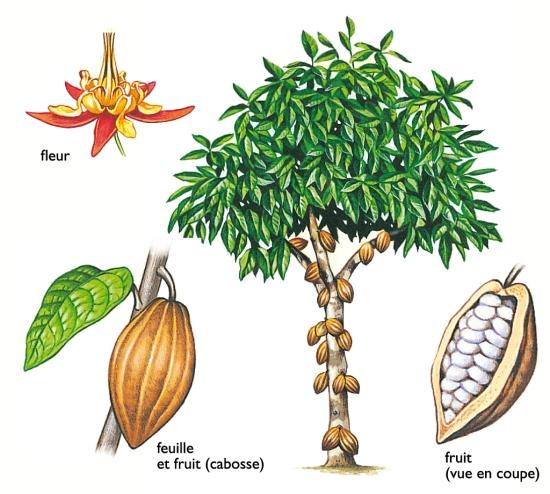
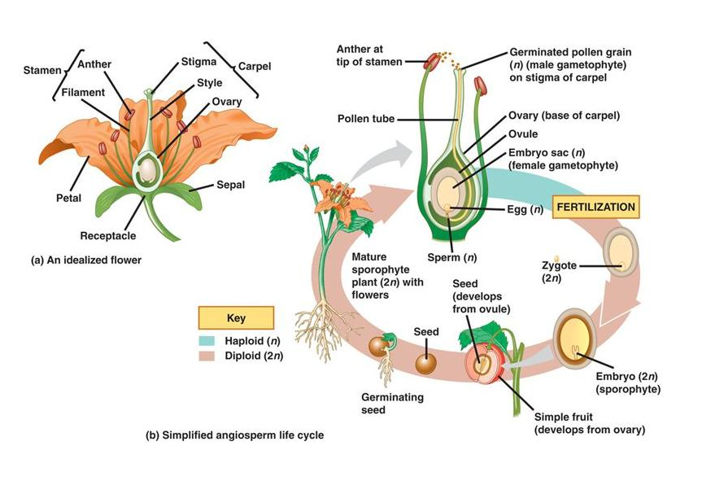

DICOTYLEDONES



PROBLEME RESOLU : protéger et disperser la graine, améliorer la pollinisation
Les dicotylédones font partie des plantes à fleurs, ou angiospermes. Elles possèdent des fleurs qui assurent la reproduction sexuée
et permettent la formation de graines enfermées dans des fruits. La fleur favorise différentes stratégies de pollinisation, notamment par les insectes.
Après la fécondation, le fruit protège les graines et peut participer à leur dispersion.
APPAREIL VEGETATIF

Les dicotylédones présentent généralement un appareil végétatif différencié en racines, tige et feuilles.
Leurs feuilles possèdent souvent une nervation ramifiée, contrairement à la nervation parallèle caractéristique des graminées.
Leur système racinaire peut être pivotant ou ramifié selon les espèces. Les tiges peuvent être herbacées ou ligneuses, comme chez le cacaoyer.
La diversité de leur appareil végétatif leur permet d'occuper des milieux écologiques très variés.
CYCLE DE REPRODUCTION

La fleur constitue l'appareil reproducteur des angiospermes. Les étamines produisent le pollen, tandis que le pistil contient les ovules dans l'ovaire.
Après la pollinisation,
le grain de pollen germe et forme un tube pollinique qui permet aux gamètes mâles d'atteindre le sac embryonnaire. La double fécondation conduit à la formation de l'embryon et du tissu de réserve appelé albumen.
L'ovule devient une graine et l'ovaire se transforme en fruit. La graine peut ensuite germer et donner une nouvelle plante